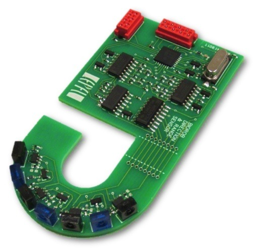
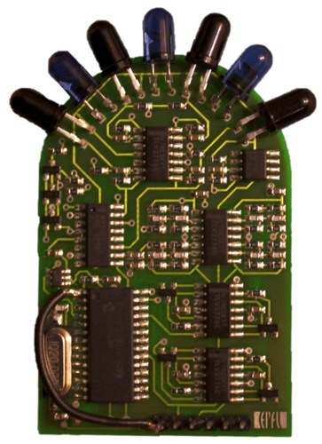
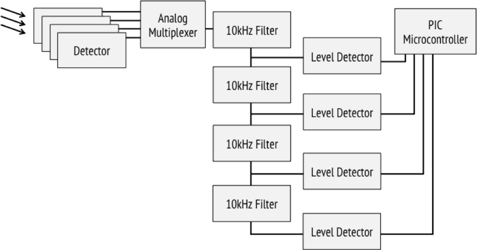
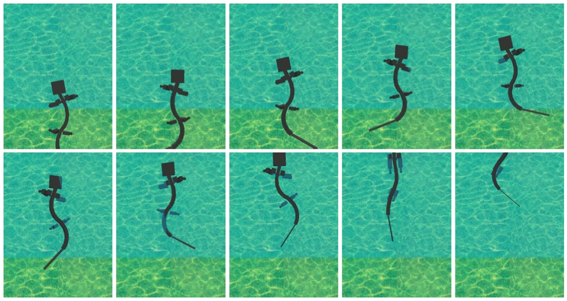

2011
| IR / Optical Relative Positioning System |
Oct 2011 - Jan 2012 |
As a semester project working with the EPFL
Biorobotics
Laboratory, I designed, built, and tested a relative
positioning system for mobile robots that uses modulated
infrared or visible light to determine the range and
direction to a modulated source. The sensor is insensitive
to ambient light differences and other environmental
factors. The system also allows low bandwidth communication
and can be used to detect obstacles (using an onboard
transmitter). The device is smaller than existing systems,
and be easily adjusted to suit new environments.
|

prototype transceiver
|
|

first hardware revision
|

circuit board layout
|
|

block diagram of receiver
|

distance calibration
|

detector sensitivity
|
 |
Dr. Alessandro Crespi, Dr. Juke Ijspeert (faculty) |
| Simulated Robotic Salamander |
Sept 2011 - Jan 2012 |
As a laboratory project for my Models of Biological
Sensory-Motor Systems course, we investigated the locomotion
and control of a 23 degree of freedom simulated salamander
robot. We examined the different parameters controlling both
walking and swimming using a sine-based controller and a
central pattern generator (CPG). We found that, when
optimizing the average speed through systematic tests and
particle swarm optimization, the optimal gait and swimming
trajectories are similar to the movement of actual
salamanders. We improved our salamander model by adding
stereovision and, using a biologically-inspired vision
system with a neural network, created an autonomous
salamander capable of tracking and walking toward objects.

walking salamander model
|

comparison of actual salamander and optimized controllers
|

|

configuration of central pattern generator model
|
|

transition from walking to swimming
|
|
Frédéric Wilhelm |
| Autonomous Board Cleaning Robot |
Jun 2011 - Aug 2011 |
During the summer of 2011, I worked in the
Self-Organizing Systems Research Group
at Harvard University.
While there, I developed MAG-NEATO – an autonomous
board cleaning robot. I designed the hardware and circuitry,
sourced materials, machined parts, assembled the system, and
programmed a series of autonomous behaviors. The sub-$100
robot features custom magnetic wheels, a 32 MHz
microcontroller, LED indicators, input buttons, an
accelerometer, bump sensors, reflective color sensors, an
integrated battery charger, and an expansion port.

engineering model of MAG-NEATO
|
|
magnetic attachment
|
top view
|
bottom view
|
|
overhead
|
erasing whiteboard
|
|
Dr. Radhika Nagpal (faculty), Dr. Nils Napp |
| Force-Sensitive Multitouch Surface |
Feb 2011 - May 2011 |
As a research project during the Spring of 2011, I worked
with several other students to develop a force-sensitive
multitouch surface. We built a functioning prototype and
tested a series of different compliant surface materials
which allowed us to estimate the pressure caused by objects
and touches.
|
FTIR multitouch surface (source: Ars Technica)
|
preliminary results
|
|
Jacob Ghetto, Timothy Raymond, Seungwhan Moon, Dr. Mark Chang (faculty) |
previous year | timeline | next year